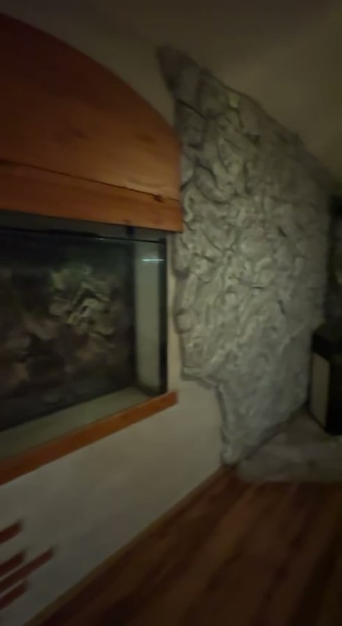

Дисциплина честного кадраDisciplína poctivého záběruThe Honest-Frame Discipline


Правила: ① каждое реальное фото несёт тег REAL · дата; каждый рендер — тег 3D CONCEPT, без исключений — это валюта доверия инвестора. ② Тёплый янтарно-каменный grade: свет свечи и камня, никакого холодного глянца. ③ Запрещены стоковые клише: ключи в руках, рукопожатия, «счастливые пары с чемоданами». ④ Фасад не фотографирован — внешние виды существуют только как помеченные концепты. Pravidla: ① každá skutečná fotografie nese štítek REAL · datum; každý render štítek 3D CONCEPT, bez výjimek — je to měna důvěry investora. ② Teplý jantarově-kamenný grade: světlo svíčky a kamene, žádný studený lesk. ③ Zakázána stocková klišé: klíče v dlani, podání rukou, „šťastné páry s kufry“. ④ Fasáda není vyfocena — exteriéry existují jen jako označené koncepty. Rules: ① every real photo carries a REAL · date tag; every render a 3D CONCEPT tag, no exceptions — this is the currency of investor trust. ② A warm amber-stone grade: candle-and-stone light, no cold gloss. ③ Stock clichés banned: keys in hands, handshakes, "happy couples with suitcases". ④ The facade has never been photographed — exterior views exist only as labeled concepts.